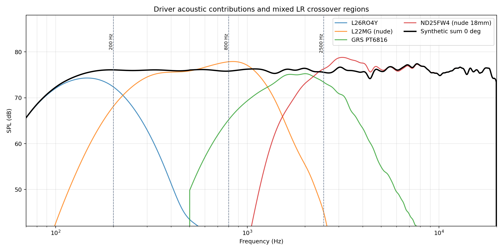
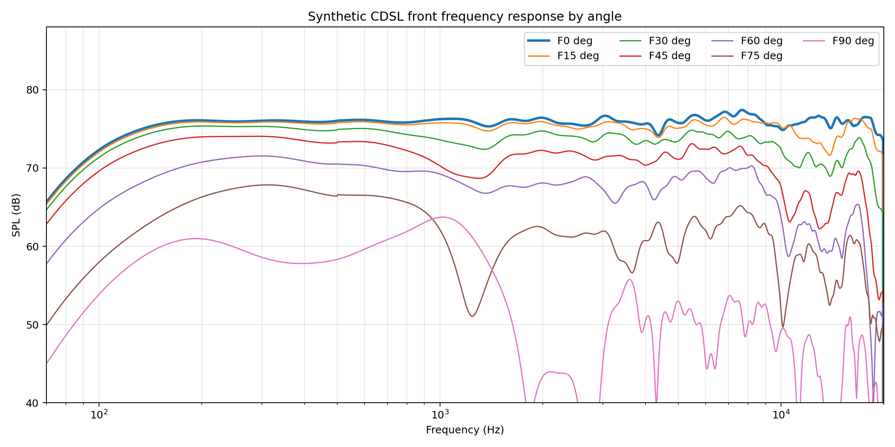
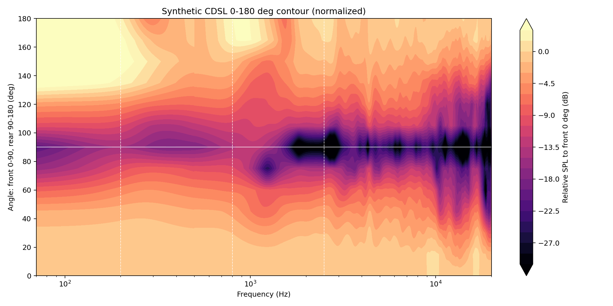
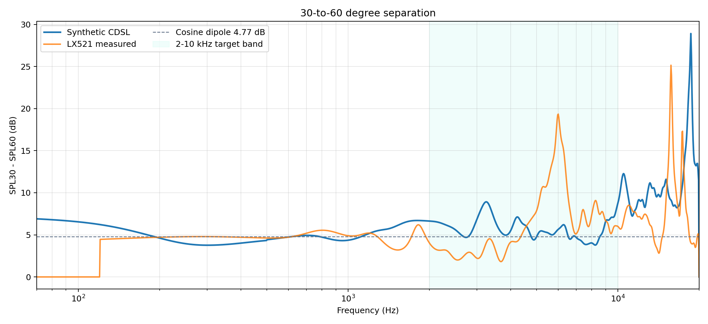

Which Is Which
Chosen: L26RO4Y 70-120 Hz / L22MG (nude) 120-650 Hz / SS10F8414G10 650-2000 Hz / GRS PT6816 2000-12000 Hz / ND25FW4 (nude 18mm) >12000 Hz. Crossovers: LR4 120 Hz, LR4 650 Hz, LR2 2000 Hz, LR2 12000 Hz.
Baseline: L26RO4Y 70-200 Hz / L22MG (nude) 200-800 Hz / GRS PT6816 800-2500 Hz / ND25FW4 (nude 18mm) >2500 Hz. Crossovers: LR4 200 Hz, LR4 800 Hz, LR4 2500 Hz.
Acoustic factors are weighted 100% total and use broad psychoacoustic frequency weighting centered near 2.6 kHz. The weighting emphasizes 2-7 kHz, still includes the rest of 2-10 kHz, and prevents the suspect 10 kHz/top-octave feature from dominating the decision. Biquad counts and sparse-EQ limits are hard pass/fail filters only. Weighted factor wins: chosen 53%, baseline 42%, insufficient/context 5%.
| Factor | Weight | Chosen | Baseline | Direction | Winner | Why it matters |
|---|---|---|---|---|---|---|
| Weighted 2-10 kHz SPL30-SPL60 (dB) | 28% | 7.15 | 5.82 | higher | chosen | Near/far angular separation is the main CDSL target; weighting emphasizes the ear-sensitive 2-7 kHz center and downweights the suspect top octave. |
| Crossover-local polar mismatch RMS (dB) | 18% | 7.58 | 9.04 | lower | chosen | Keeps adjacent driver radiation patterns close through each acoustic handoff, which is why the chosen mixed LR2/LR4 stack is not judged by SPL alone. |
| Weighted 90-degree leakage excess RMS (dB) | 16% | 0.15 | 0.00 | lower | baseline | Penalizes energy above a -18 dB side-null target where crosstalk cancellation is most sensitive. |
| Weighted front dipole polar error RMS (dB) | 12% | 3.24 | 2.05 | lower | baseline | Keeps the front lobe close to a cosine/dipole shape rather than just maximizing one angle pair. |
| Weighted rear dipole polar error RMS (dB) | 8% | 3.74 | 1.35 | lower | baseline | Checks whether the rear radiation stays dipole-like instead of becoming an uncontrolled back lobe. |
| Weighted rear/front symmetry RMS (dB) | 6% | 1.14 | 1.07 | lower | baseline | Dipole behavior needs rear 0-degree magnitude close to front 0-degree after filtering. |
| Weighted 200-10k flatness RMS (dB) | 7% | 0.25 | 0.34 | lower | chosen | Uses one-third-octave front-sum trend with the same broad psychoacoustic weighting; filter count is only a cap, not a score. |
| Effective known system THD, 2-7 kHz (%) | 5% | 0.07 | - | lower | insufficient coverage | Uses filtered driver contributions and available REW THD traces; incomplete coverage is reported separately. |
| Known THD contribution coverage, 2-7 kHz | 0% | 0.30 | 0.00 | higher | context | Coverage is not a winner metric; it tells how much of the weighted fundamental has measured THD traces. |
Hard Filters
These rows answer whether the design is exportable under the 15-biquad/channel limit and sparse flat-EQ target. Passing with fewer filters is not scored as a better acoustic design.
| Variant | XO Types | Max Biquads | Cap | Flat RMS | Flat P-P | Flatness |
|---|---|---|---|---|---|---|
| Chosen | LR4 / LR4 / LR2 / LR2 | 12/15 | pass | 0.24 | 1.05 | warn |
| Baseline | LR4 / LR4 / LR4 | 12/15 | pass | 0.32 | 1.60 | warn |
Acoustic Sum




Directivity



